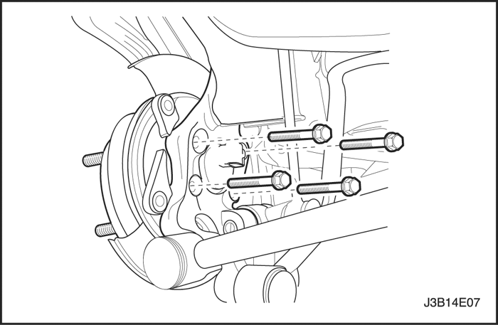

SECCIÓN 4E2
FRENOS DE TAMBOR TRASEROS
ESPECIFICACIONES
Especificaciones generales
| . | Motor 1.4/1.6/1.8/2.0 DOHC |
| Aplicación | Milímetros | Pulgadas |
| Tambores de freno: | . | . |
| Diámetro interior Diámetro máximo de rectificado Falta de redondez | 200.00 201.00 0.04 | 7.87 7.91 0.0016 |
| Diámetro del cilindro de rueda: | . | . |
| Máximo Nominal | 20.7 20.64 | 0.815 0.812 |
Especificaciones de apriete de la sujeción
| Aplicación | N•m | Lb-pie | Lb-pulg. |
| Tubería de freno | 16 | 12 | - |
| Tuercas del cubo de rueda/placa de apoyo al eje trasero | 28 | 21 | - |
| Tornillo de la placa de apoyo al cilindro de rueda | 8 | - | 71 |
DIAGNÓSTICO
Inspección de los forros de freno
- Levante y apoye el vehículo adecuadamente.
- Desmonte la rueda. Consulte la Sección 2E, Neumáticos y ruedas.
- Suelte el freno de estacionamiento.
- Desmonte el tambor. Consulte el apartado "Tambor" de esta sección.
- Mida el espesor del forro. El espesor mínimo del forro es de 0,5 mm (0,02 pulgadas).
Precaución: Cuando realice labores de mantenimiento en las piezas del freno, no genere polvo lijando o rectificando los forros de freno, o bien limpiando dichas piezas con un cepillo seco o aire comprimido.
Importante: Sustituya el conjunto de zapata y forro únicamente por conjuntos de eje.
- Instale el tambor si lo desmontó. Consulte el apartado "Tambor de una pieza" o "Tambor de dos piezas" en esta sección.
- Monte la rueda si la desmontó. Consulte la Sección 2E, Neumáticos y ruedas.
- Baje el vehículo.
Tambores
Al desmontar los discos del freno, se deben inspeccionar y limpiar completamente para ver si están agrietados, rayados, tienen ranuras profundas o están más allá del límite de falta de redondez especificado.
- Un tambor agrietado es inseguro para continuar en servicio, por lo que debe ser sustituido. No intente soldar un tambor agrietado. Suavice las rayas superficiales que pueda haber.
- Las rayas profundas o extensas causan un desgaste excesivo del forro de freno y pueden hacer necesario el rectificado de la superficie de frenado del disco.
- Si los forros de freno están ligeramente desgastados, pero todavía utilizables, y el disco se encuentra profundamente rayado, pula el disco con un esmeril fino pero no lo rectifique. La eliminación de todas las ranuras del tambor y la suavización de las aristas en los forros implicaría la eliminación de una cantidad excesiva de metal y de material del forro. Si no se tocan, las ranuras y las aristas coinciden, por lo que se puede continuar trabajando con él satisfactoriamente. Si se tienen que cambiar los forros de freno, rectifique el tambor ranurado. Un tambor ranurado, empleado con un forro nuevo, no sólo desgastará el forro, sino que también dificultará, por no decir imposibilitará, un rendimiento adecuado del freno.
- Un tambor ovalizado imposibilita el ajuste preciso de la zapata del freno y probablemente causará un desgaste excesivo en otras piezas del mecanismo del freno. Un tambor ovalizado también puede provocar un desgaste profundo e irregular en la banda de rodadura del neumático, así como vibración en el pedal de freno.
- Se puede medir con exactitud hasta qué punto está desgastado u ovalizado un tambor con un micrómetro de interiores montado con las varillas de extensión adecuadas. Cuando vaya a medir hasta qué punto está desgastado u ovalizado un tambor, tome las medidas desde el reborde interno hacia el reborde externo de la superficie mecanizada a intervalos de 90 grados alrededor de la circunferencia del tambor. Rectifique el disco cuando exceda el límite especificado de falta de redondez.
MANTENIMIENTO Y REPARACIÓN
SERVICIO EN EL VEHÍCULO


Ajuste de los frenos
Procedimiento de desmontaje
- Suelte el freno de estacionamiento.
- Accione el freno 10 veces como mínimo hasta que ya no se oiga, en ninguno de los tambores de freno, la vibración del resorte de ajuste que hay sobre la tuerca.
- Levante y apoye el vehículo adecuadamente.
- Desmonte las ruedas traseras. Consulte la Sección 2E, Neumáticos y ruedas.
- Quite el tornillo de retención del tambor.
- Desmonte el tambor de freno.

- Utilizando la tuerca del dispositivo de ajuste del freno trasero, gire el conjunto de este dispositivo hasta que haya suficiente resistencia al rozamiento del tambor de freno.
- Asegúrese de que los topes de la palanca del freno de estacionamiento estén apoyados contra el borde de la brida de unión de la zapata. En caso contrario, afloje el cable del freno de estacionamiento en el igualador. Consulte la Sección 4G, Freno de estacionamiento.
Procedimiento de montaje
- Coloque el tambor del freno trasero. Apriete el tornillo de retención del tambor.
Apretar
Apriete los tornillos de retención del tambor hasta 4 N•m (35 lb-pulg.).
- Monte las ruedas traseras. Consulte la Sección 2E, Neumáticos y ruedas.
Importante: Hay que pisar el pedal de freno más de 10 veces. Cuando ya no se oiga el clic, significará que la holgura entre la zapata y el tambor de freno ha quedado ajustada.
- Pise el pedal de freno varias veces hasta que ya no se oiga el clic del actuador de ajuste.
- Ajuste el freno de estacionamiento. Consulte la Sección 4G, Freno de estacionamiento.
Zapata y forro
Procedimiento de desmontaje
- Levante y apoye el vehículo adecuadamente.
- Desmonte las ruedas traseras. Consulte la Sección 2E, Neumáticos y ruedas.
- Afloje el cable del freno de estacionamiento. Consulte la Sección 4G, Freno de estacionamiento.
- Desmonte el tambor de freno.

- Afloje el muelle de recuperación de sujeción de la zapata delantera.
- Separe la articulación superior del muelle de la articulación de unión de la zapata delantera para reducir la tensión en el muelle de recuperación superior.
- Desmonte el muelle de recuperación superior y el dispositivo de ajuste.

- Desenganche el muelle de recuperación de sujeción del conjunto del forro y la zapata trasera.
- Desconecte el conjunto del forro y la zapata trasera en el lado derecho.
- Separe el muelle de recuperación inferior.

Procedimiento de montaje
- Mida el espesor mínimo del forro de freno. Consulte el apartado "Comprobación de los forros de freno" de esta sección.
- Limpie el conjunto del dispositivo de ajuste y aplíquele grasa.
Aviso: Si duda de la resistencia o calidad de alguna de las piezas debido a la decoloración por el calor, el esfuerzo excesivo o el desgaste, entonces debe de cambiar las zapatas, los muelles y el conjunto del dispositivo de ajuste.
- Compruebe que las roscas del conjunto del dispositivo de ajuste giren con facilidad.
- Monte el conjunto del forro y la zapata trasera con el muelle de sujeción, la arandela y el pasador.
- Asegúrese de que el recorrido del cable del freno de estacionamiento sea correcto y que esté bien fijado a la palanca del freno.
Aviso: No estire demasiado el muelle de recuperación inferior.
- Fije el muelle de recuperación inferior en la zapata.

- Coloque la zapata delantera y el conjunto del dispositivo de ajuste contra la placa de apoyo.
- Fije el muelle de recuperación inferior en la zapata delantera.
- Monte el conjunto del dispositivo de ajuste.
- Gire el dispositivo de ajuste lo máximo posible.
- Coloque el clip elástico mirando hacia la placa de apoyo.
- Monte la zapata delantera con el muelle de sujeción.
- Acople la unión muelle-articulación superior de la zapata delantera, que tensa el muelle de recuperación.
Aviso: No estire demasiado el muelle de recuperación superior.
- Coloque el muelle de recuperación superior desde la articulación de unión del muelle hacia la zapata de freno.
Aviso: La tuerca no debe quedar totalmente bloqueada en el extremo del conjunto de ajuste.
- Antes de montar el disco de freno, asegúrese de que la tuerca del conjunto del dispositivo de ajuste haya quedado apretada hasta el tope.
- Monte el tambor de freno y sujételo con el tornillo de retención del tambor.
Apretar
Apriete los tornillos de retención del tambor hasta 4 N•m (35 lb-pulg.).
- Monte las ruedas traseras. Consulte la Sección 2E, Neumáticos y ruedas.
- Ajuste los frenos de las ruedas traseras. Consulte el apartado "Ajuste de los frenos" en esta sección.
- Ajuste el freno de estacionamiento. Consulte la Sección 4G, Freno de estacionamiento.
- Baje el vehículo.
Conjunto del cilindro de rueda
Procedimiento de desmontaje
- Levante y apoye el vehículo adecuadamente.
- Desmonte las ruedas traseras. Consulte la Sección 2E, Neumáticos y ruedas.
- Desmonte el tambor de freno.
- Desmonte la zapata y el forro. Consulte el apartado "Zapata y forro" de esta sección.
- Limpie la suciedad y cuerpos extraños de alrededor de la entrada del tubo de freno del cilindro de rueda, el piloto y el tornillo.
- Desconecte la tubería de freno del cilindro de rueda.
- Tape la abertura de la tubería de freno para evitar la pérdida de líquido o la entrada de suciedad.

- Desmonte el tornillo de fijación de la placa de apoyo al cilindro de rueda.
- Extraiga el cilindro de rueda de la placa de apoyo con golpes suaves, teniendo cuidado de no dañar la válvula de purga o su tapón.

Procedimiento de montaje
- Monte el cilindro de rueda en la placa de apoyo con el tornillo del cilindro de rueda.
Apretar
Apriete el tornillo de la placa de apoyo al cilindro de rueda hasta 8 N•m (71 lb-pulg.).
- Conecte la tubería de freno al cilindro de rueda.
Apretar
Apriete la tubería de freno hasta 16 N• m (12 lb-pie).
- Monte la zapata, el forro y el tambor de freno. Consulte el apartado "Zapata y forro" de esta sección.
- Purgue los frenos. Consulte la Sección 4A, Frenos hidráulicos.

Placa de apoyo
Procedimiento de desmontaje
- Levante y apoye el vehículo adecuadamente.
- Desmonte los componentes de la zapata de freno, incluyendo el desmontaje completo del freno de estacionamiento con la retención. Consulte el apartado "Zapata y forro" en esta sección y la Sección 4A, Frenos hidráulicos.
- Quite las tuercas y sujete el conjunto de cubo de la rueda a la placa de apoyo.
- Retire la tubería de freno y tape la abertura en la misma para evitar la pérdida de líquido o la entrada de suciedad.

- Desmonte el conjunto del cilindro de rueda. Consulte el apartado "Conjunto del cilindro de rueda" en esta sección.
- Desmonte el conjunto de cubo de la rueda.
- Si se trata de frenos ABS, desconecte el cable que va al sensor de velocidad de las ruedas.
- Separe la placa de apoyo y la junta.
Procedimiento de montaje
- Monte el cubo con los tornillos.
Apretar
Apriete los tornillos del cubo hasta 65 N•m (48 lb-pie).
- Monte el conjunto del cilindro de rueda a la placa de apoyo. Consulte el apartado "Conjunto del cilindro de rueda" en esta sección.
- Conecte la tubería de freno.
Apretar
Apriete la tubería de freno hasta 16 N• m (12 lb-pie).
- Monte los componentes del freno. Consulte el apartado "Zapata y forro" de esta sección.
- Coloque el cable del freno de estacionamiento con la retención sujetando el cable a la palanca de la zapata de freno. Consulte la Sección 4G, Freno de estacionamiento.
- Purgue los frenos. Consulte la Sección 4A, Frenos hidráulicos.
- Baje el vehículo.
REPARACIÓN DE LOS COMPONENTES

Cilindro de rueda
Procedimiento de desmontaje
- Desmonte de la placa de apoyo el conjunto del cilindro de rueda. Consulte el apartado "Conjunto del cilindro de rueda" en esta sección.
- Desmonte los guardapolvos, los pistones y los retenes de cada extremo del cilindro de rueda.
- Desmonte el conjunto del muelle.

- Desmonte el tapón y la válvula de purga.
Procedimiento de montaje
- Compruebe que el diámetro interior del cilindro de rueda y los pistones no estén rayados, desgastados con muescas u oxidados.
- Pula con esmeril de óxido de hierro para eliminar la oxidación en el diámetro interior del cilindro de rueda.
Importante: Si el cilindro no se acaba de limpiar con el esmeril de óxido de hierro, sustituya el conjunto.
- Limpie todas las piezas con alcohol desnaturalizado o líquido de frenos. Antes de efectuar el montaje, seque todas las piezas con aire comprimido sin aceite y lubrique los retenes nuevos, los pistones y las paredes interiores del cilindro con líquido de frenos limpio.
- Recubra ligeramente todas las piezas con líquido de frenos excepto los guardapolvos.
- Sujete la válvula de purga y el tapón al cilindro de rueda.
- Acople al cilindro de rueda el conjunto de muelle, seguido de los pistones, los retenes y los guardapolvos.
- Compruebe que los pistones se desplacen libremente.
- Monte el conjunto del cilindro de rueda. Consulte el apartado "Conjunto del cilindro de rueda" en esta sección.
DESCRIPCIÓN GENERAL Y FUNCIONAMIENTO DEL SISTEMA
Frenos de tambor
Este conjunto de freno de tambor está compuesto por un diseño de zapata delantera/trasera. El muelle de recuperación inferior y la placa de anclaje fija próxima a éste sostienen las dos zapatas contra los pistones del cilindro de rueda. Cuando se aplican los frenos, los pistones del cilindro de rueda desplazan las dos zapatas hacia fuera hasta contactar con las paredes interiores del tambor. Con la rotación hacia adelante de la rueda, la zapata de freno delantera se acuña totalmente contra el tambor y se autoactiva. Con la rotación hacia atrás de la rueda, se autoactiva la zapata trasera. La fuerza de las zapatas del freno se transmite a la placa de anclaje a través de la placa de apoyo hasta la brida del eje. El ajuste se efectúa automáticamente y se realiza siempre en cualquier aplicación de los frenos de servicio. No cambie la posición de las zapatas que hayan sido reparadas, ya que ello provocaría que el autoajuste fuera inoperante y, consecuentemente, la carrera del pedal aumentaría.
Aviso: Para evitar daños al vehículo, siga las instrucciones siguientes:
- Cambie todos los componentes incluidos en los juegos de reparación para realizar el servicio de este freno de disco.
- No utilice aire de taller lubricado en las piezas del freno, ya que puede dañar los componentes de goma.
- Si se desmonta o desconecta cualquier componente hidráulico, será necesario purgar todo o parte del sistema de frenado.
- Cambie la zapata y el forro únicamente en juegos por eje.
- Los valores de los pares de apriete especificados son para elementos de sujeción secos y sin lubricar.
- Efectúe las operaciones de servicio sobre un banco limpio que esté libre de materiales que tengan aceite mineral.